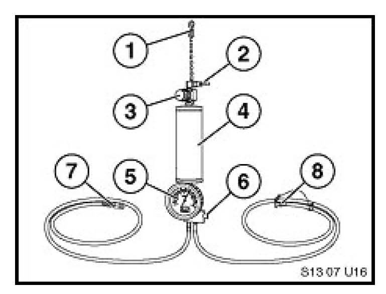
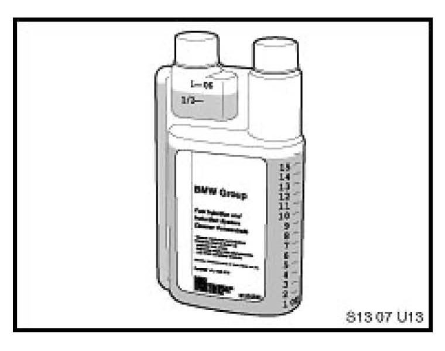

Fuel System - Injection/Induction System Cleaning
SI B04 07 07Tools and Equipment
December 2007
Technical Service
This Service Information bulletin supersedes SI B04 07 07 dated April 2007.
[NEW] designates changes to this revision
SUBJECT
Fuel Injection and Induction System Cleaning
MODEL
E46 (3 Series) vehicles equipped with M54 or M56 engines
E46 (M3) vehicles equipped with S54 engine
E53 (X5) vehicles equipped with M54 engine
E53 (X5) vehicles equipped with N62 engine
E83 (X3) vehicles equipped with M54, N52 or N52K engines E85 (Z4) vehicles equipped with M54, N52 or N52K engines
E85 (M Roadster and M Coupe) with S54 engine
E60 and E61 (5 Series) vehicles equipped with M54, N52 or N52K engines
E60 (5 Series) vehicles equipped with N62 or N62TU engines
E63 and E64 (6 Series) vehicles equipped with N62 or N62TU engines
E65 and E65 (7 Series) vehicles equipped with N62 or N62TU engines
E70 (X5) vehicles equipped with N52K engine
E70 (X5 vehicles equipped with N62TU engine
E90, E91 and E92 (3 Series) vehicles equipped with N51, N52 and N52K engines
SITUATION
Deposits found in the injection and induction system will cause the vehicle to experience a variety of drivability complaints eventually leading to the Service Engine Soon Lamp to be illuminated. Refer to SI B13 01 07 for complete details as well as in depth operational instructions.
Distribution of the following tool will be through the Automatic Tool Shipment Program. Additional tools may be purchased through your PDC. All prices on this bulletin are introductory prices and are only valid during the Automatic Tool Shipment.
Fuel Injector and Induction System Cleaner Applicator Kit
PN 82 14 0 429 692

Price = $398.90
1. Chain with hook
2. Shop air connection
3. Regulator
4. Cylinder
5. Gauge
6. Pressure relief button
7. Quick connect
8. Pressure relief hose with rubber plug

Fuel Injector and Induction System Cleaner Concentrate
PN 82 14 0 428 376
Price = $12.95
The cleaner will not be sent via the Automatic Tool Shipment Program. This item must be ordered by each center.
IMPORTANT:
Before starting the cleaning procedure, place vehicle in a well ventilated area, if the cleaning procedure occurs indoors be sure to have the vehicle connected to an exhaust removal system. It is necessary to wear Nitrile rubber gloves and safety glasses during this procedure.
[NEW] TOOL WARRANTY INFORMATION
The use of non-approved materials voids the warranty of the Fuel Injector and Induction System Cleaner Applicator Kit PN 82 14 0 429 692 and its contents. All of these tools are returned for inspection. If the materials causing damage to these tools have been identified, then the tool will be returned to your center and a replacement credit will not be applied. When the tools described above are returned for warranty reimbursement, the tool must be accompanied by contact information and a reason for return in the shipping carton. Using a non-approved material can lead to deterioration of the tool, resulting in incorrect operation and a possible safety concern.
The Fuel Injector and Induction System Cleaner Applicator is constructed with materials that are compatible with gasoline and the Fuel Injector and Induction System Cleaner Concentrate PN 82 14 0 428 376 only.
Refer to Parts Information bulletin PIB06 03 02 for tool warranty details.

Disclaimer